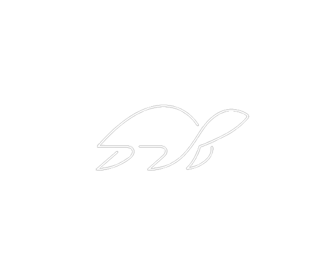

<mat-sidenav-container autosize class="sidenav-container">
  <mat-sidenav class="sidenav" #drawer >

    <mat-nav-list>

      <a mat-list-item (click)="closeDrawer(drawer)" routerLink="/home">Ana Sayfa</a>
      <a mat-list-item (click)="closeDrawer(drawer)" routerLink="/acente">Acente</a>
      <a mat-list-item (click)="closeDrawer(drawer)" routerLink="/hotel">Otel</a>
      <a mat-list-item (click)="closeDrawer(drawer)" routerLink="/hostel">Pansiyon</a>
      <a mat-list-item (click)="closeDrawer(drawer)" routerLink="/roomtype">Oda Tipi</a>

      <ng-container >
        <mat-divider></mat-divider>
        <div style="text-align: center;">
        </div>
      </ng-container>
    </mat-nav-list>

  </mat-sidenav>
  <mat-sidenav-content>
    <mat-toolbar color="primary">
      <p [(ngModel)]="logusername" class="kullanici" name="logusername" ngDefaultControl>{{logusername}} </p>

      <button type="button" aria-label="Toggle sidenav" mat-icon-button
        (click)="drawer.toggle()">
        <mat-icon aria-label="Side nav toggle icon">menu</mat-icon>
      </button>
      
      <span class="turtle" style="text-align:center">TURTLE</span>
    </mat-toolbar>
    <div class="grid-container">
      <ng-content></ng-content>
    </div>
  </mat-sidenav-content>
</mat-sidenav-container>
